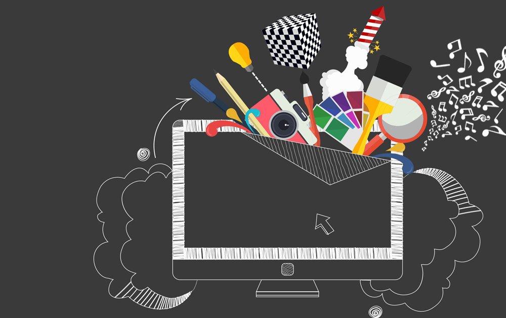

Введение. Графический дизайн — художественно-проектная деятельность по созданию гармоничной и эффективной визуально-коммуникационной среды. С другой стороны, графический дизайн − это форма визуальной коммуникации с использованием текста, изображений или продвижения посыла для представления информации.
Графический дизайн — художественно-проектная деятельность по созданию гармоничной и эффективной визуально-коммуникационной среды. С другой стороны, графический дизайн − это форма визуальной коммуникации с использованием текста, изображений или продвижения посыла для представления информации. Графический дизайн — художественно-проектная деятельность по созданию гармоничной и эффективной визуально-коммуникационной среды. С другой стороны, графический дизайн − это форма визуальной коммуникации с использованием текста, изображений или продвижения посыла для представления информации. Графический дизайн вносит инновационный вклад в развитие социально-экономической и культурной сфер жизни, способствуя формированию визуального ландшафта современности. Разновидность дизайна, модернизированная форма рисованной и печатной прикладной графики (типографики) с использованием новых промышленных технологий (компьютерная графика, веб-дизайн), тиражирования и внедрения дизайн-продукта в среду визуальной коммуникации. Искусство графического дизайна включает в себя целый ряд когнитивных навыков и ремесел, включая типографику, разработку изображений и верстку страниц.
Текст пункта 1.2
Графический дизайн — художественно-проектная деятельность по созданию гармоничной и эффективной визуально-коммуникационной среды. С другой стороны, графический дизайн − это форма визуальной коммуникации с использованием текста, изображений или продвижения посыла для представления информации.Графический дизайн — художественно-проектная деятельность по созданию гармоничной и эффективной визуально-коммуникационной среды. С другой стороны, графический дизайн − это форма визуальной коммуникации с использованием текста, изображений или продвижения посыла для представления информации.